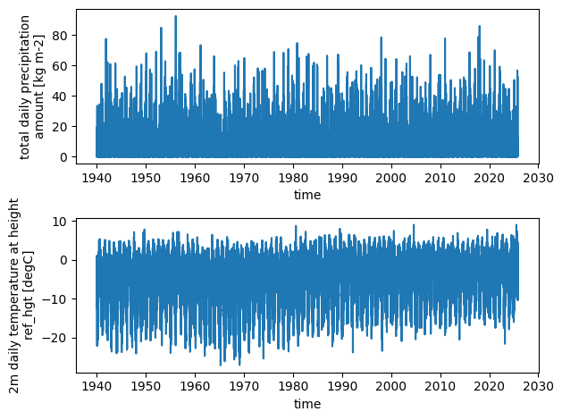
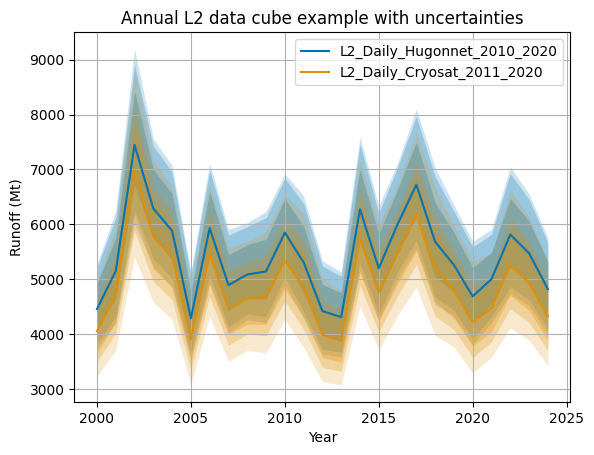
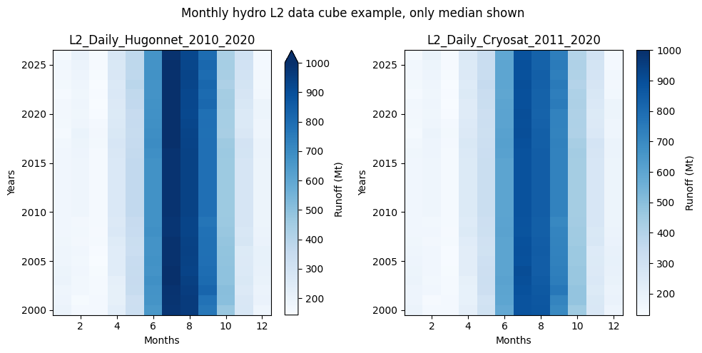

Creating DTC Glaciers EO-DT-Enhanced Data Cubes (L2)#
For this example, we focus on the Brúarjökull outlet glacier of the Vatnajökull ice cap in Iceland.
Brúarjökull drains into catchments that feed Iceland’s largest hydropower system, making it an excellent case study for exploring how variations in glacier mass balance influence seasonal and long-term water availability (see this interactive visualisation story on the DestinE website).
Conceptually, Level 2 (L2) data cubes build upon the observational foundation provided by L1 data cubes by integrating EO observations with physically based glacier modelling and data assimilation.
Whilst L1 data cubes only contain harmonised observations, L2 data cubes provide model-consistent estimates of glacier state and fluxes, together with associated uncertainty information.
In this notebook, we use Brúarjökull to demonstrate how L1 observational data cubes (created in this notebook) are ingested into the DTCG API data assimilation pipeline to generate L2 data cubes.
This process illustrates how new EO observations can be systematically combined with modelling frameworks to produce temporally continuous and physically consistent representations of glacier evolution.
The example highlights how L2 data cubes bridge the gap between observations and projections, and provide a basis for improved assessments of future glacier change and its implications for water availability in glacier-influenced hydropower systems.
If required, install the DTCG API using the following command:
!pip install 'dtcg[jupyter] @ git+https://github.com/DTC-Glaciers/dtcg'
Run this command in a notebook cell.
# Imports
import xarray as xr
import matplotlib.pyplot as plt
import dtcg.integration.oggm_bindings as oggm_bindings
import dtcg.integration.calibration as calibration
from dtcg import DEFAULT_L1_DATACUBE_URL, DEFAULT_L2_DATACUBE_URL
from dtcg.api.external.call import StreamDatacube
rgi_id_ice = "RGI60-06.00377" # Brúarjökull
dtcg_oggm_ice = oggm_bindings.BindingsOggmModel(rgi_id=rgi_id_ice)
def get_l1_data_tree(rgi_id):
return xr.open_datatree(
f"{DEFAULT_L1_DATACUBE_URL}{rgi_id}.zarr",
engine="zarr",
)
data_tree_ice = get_l1_data_tree(rgi_id_ice)
data_tree_ice
<xarray.DataTree>
Group: /
└── Group: /L1
Dimensions: (y: 370, x: 436, t: 177, t_wgms: 32)
Coordinates:
* y (y) float32 1kB 7.201e+06 ... 7....
* x (x) float32 2kB 3.94e+05 ... 4.8...
* t (t) datetime64[ns] 1kB 2011-01-1...
* t_wgms (t_wgms) int64 256B 1993 ... 2024
Data variables: (12/21)
consensus_ice_thickness (y, x) float32 645kB ...
eolis_elevation_change_sigma_timeseries (t) float64 1kB ...
eolis_elevation_change_timeseries (t) float64 1kB ...
eolis_gridded_elevation_change (t, y, x) float64 228MB ...
eolis_gridded_elevation_change_sigma (t, y, x) float64 228MB ...
glacier_ext (y, x) int8 161kB ...
... ...
spatial_ref int64 8B ...
topo (y, x) float32 645kB ...
topo_smoothed (y, x) float32 645kB ...
topo_valid_mask (y, x) int8 161kB ...
wgms_mb (t_wgms) float64 256B ...
wgms_mb_unc (t_wgms) float64 256B ...
Attributes:
Conventions: CF-1.12
comment: The DTC Glaciers project is developed under the Euro...
date_created: 2026-01-10T23:48:41.290684
RGI-ID: RGI60-06.00377
glacier_attributes: {'rgi_id': 'RGI60-06.00377', 'glims_id': 'G343733E64...
title: Datacube of glacier-domain variables.
summary: Resampled glacier-domain variables from multiple sou...Assimilating EO-data within DTC-Glaciers#
Preparing L1 data for assimilation#
Here we use observations from Hugonnet et al. (2021) and CryoTEMPO-EOLIS to create two different versions of L2 data cubes.
In OGGM (the glacier model used under the hood), the default approach is to use glacier-integrated elevation change from Hugonnet et al. (2021) averaged over a 20-year period as the geodetic reference.
We convert the CryoSat-2 elevation-change time series (\(\Delta h\)) into a mass-change estimate over a selected period (\(\mathrm{dmda}\)) to create a comparable reference from CryoSat-2. We then compare this with the Hugonnet et al. (2021) reference dataset retrieved from the OGGM shop.
Steps#
Compute the elevation change over the chosen period
\[ \Delta h = h(t_{\mathrm{end}}) - h(t_{\mathrm{start}}) \]Convert elevation change to mass change per square meter (to match the Hugonnet units) using a bulk density of
\(\rho = 850\ \mathrm{kg\,m^{-3}}\):\[ \mathrm{dmda}\;[\mathrm{kg\,m^{-2}}] = \Delta h\,\rho \]
TODO: Add a short explanation of how uncertainties are propagated
Next, we compare the two reference datasets using the DTC Glaciers get_ref_mb method:
# we will use the L1 datacubes for the calculation of the reference mass balance
calibrator = calibration.CalibratorCryotempo(
datacube_l1=data_tree_ice["L1"].ds, gdir=dtcg_oggm_ice.gdir
)
ref_mb_cryotempo = calibrator.get_ref_mb(
source="CryoTEMPO-EOLIS",
ref_mb_period="2011-01-01_2019-12-01",
)
ref_mb_hugonnet = calibrator.get_ref_mb(
source="Hugonnet",
ref_mb_period="2010-01-01_2020-01-01",
)
ref_mb_cryotempo
(np.float64(-1236.4794762169674),
'kg m-2',
np.float64(391.68898664986074),
'2011-01-15_2019-12-15')
ref_mb_hugonnet
(-505.29999999999995, 'kg m-2 yr-1', 105.5, '2010-01-01_2020-01-01')
The reference values from Hugonnet et al. (2021) are far more negative than those from CryoTEMPO-EOLIS.
When interpreting this difference, please note the two datasets use different units:
Hugonnet et al. (2021):
kg m⁻² yr⁻¹(a rate per year)CryoTEMPO-EOLIS:
kg m⁻²(a cumulative change over the selected period)
For direct comparisons, convert one dataset so that both represent the same quantity (either a total change over a period, or a per-year rate).
# CryoTEMPO-EOLIS converted to kg m⁻² yr⁻¹
ref_mb_cryotempo[0] / 9
np.float64(-137.38660846855194)
Climate forcing data from DestinE Platform#
For the model climate forcing, we use ERA5 data downloaded from the Earth Data Hub, available through the DestinE Platform. This setup allows us to retrieve up-to-date climate data to generate L2 data cubes.
The precomputed data cubes in the present implementation are processed up to October 2025. However, theyyhey can easily be extended using the approach shown below.
To run the code in the following section, register on the DestinE Platform by following the instructions provided here: Getting started with Earth Data Hub
# uncomment to get up-to-date climate data for one glacier
# import xarray as xr
# ds = xr.open_dataset(
# "https://data.earthdatahub.destine.eu/era5/reanalysis-era5-single-levels-monthly-means-v0.zarr",
# storage_options={"client_kwargs":{"trust_env":True}},
# chunks={},
# engine="zarr",
# )
## grid point used by OGGM for Hintereisferner
# ds_hef = ds[['t2m', 'tp']].sel(longitude=10.75, latitude=46.75).load()
# Or have a look at our downloaded and processed daily data up to October 2025
fp_daily = dtcg_oggm_ice.gdir.get_filepath(
"climate_historical", filesuffix="_era_daily"
)
with xr.open_dataset(fp_daily) as ds_clim_daily:
ds_clim_daily = ds_clim_daily.load()
fig, axs = plt.subplots(2, 1)
ds_clim_daily.prcp.plot(ax=axs[0])
ds_clim_daily.temp.plot(ax=axs[1])
fig.tight_layout()

Data assimilation and uncertainty propagation with Monte Carlo Simulation#
We use a Monte Carlo simulation (MCS) to propagate model and observation uncertainty through the assimilation pipeline. The goal is to calibrate a temperature-index mass balance model so it matches one of the EO datasets described above.
We define probability distributions for all inputs used during model calibration. These include both the EO data and the model parameters (precipitation factor, temperature bias, and degree-day factor). Together these distributions form a high-dimensional parameter space, or “calibration hyperspace”.
We draw a sample of around 100 ensemble members from this hyperspace using Saltelli’s extension (Saltelli, 2002) of the Sobol′ sequence (Sobol′, 2001). The Sobol′ sequence is a widely used quasi-random, low-discrepancy sequence that provides an efficient and uniform sampling of the parameter space. This sampling is implemented using the SALib sensitivity analysis library.
We generate a full set of L2 data cubes for each ensemble member. We then summarise the ensemble output by computing the quantiles 0.05, 0.15, 0.25, 0.5 (median), 0.75, 0.85, and 0.95.
The final L2 data cubes contain these quantiles (stored along the member coordinate), as well as a control run. The control run represents the model output obtained using only the most likely values of all inputs.
Running the assimilation and generating L2 data cubes#
We need to select a reference dataset, a reference period, and a mass balance model for the assimilation. The current default model in OGGM is a monthly temperature-index model, MonthlyTIModel (see the OGGM v1.6.2 documentation).
We developed a daily temperature-index model, DailyTIModel for DTC Glaciers, as well as a new mass balance model that includes a bucket system for snow tracking, SfcTypeTIModel. Both models build on the work of Schuster et al. (2023) and the OGGM mass-balance sandbox.
If you are interested in using the new surface-tracking mass balance model, you can expand the cell below to see an example. Please note that this model is still under active development, and the results should therefore be interpreted with caution.
We define a calibration matrix for this assimilation example with two calibration runs of the same mass balance model (DailyTIModel). Each run uses a different reference dataset and time window:
Daily_Hugonnet_2010_2020: calibrated using the geodetic mass balance from Hugonnet et al. (2021) over the period 2010–2020.
Daily_Cryosat_2011_2020: calibrated using CryoTEMPO-EOLIS over the period 2011–2020.
The call to calibrator.calibrate() then runs the assimilation for all entries in the calibration matrix and generates the corresponding L2 data cubes.
from oggm.core import massbalance
calibrator.set_model_matrix(
name=f"Daily_Hugonnet_2010_2020",
model=massbalance.DailyTIModel,
ref_mb_period="2010-01-01_2020-01-01",
source="Hugonnet",
)
calibrator.set_model_matrix(
name=f"Daily_Cryosat_2011_2020",
model=massbalance.DailyTIModel,
ref_mb_period="2011-01-01_2019-12-01",
source="CryoTEMPO-EOLIS",
extra_kwargs={},
)
# run calibration and generate L2 datacubes
l2_datacubes = calibrator.calibrate(
gdir=dtcg_oggm_ice.gdir,
# show some information during the workflow to see what is going on
show_log=True,
# 'nr_samples' defines the ensemble size for the Monte Carlo Simulation,
# for demonstration we set it to 2**1,
mcs_sampling_settings={"nr_samples": 2**1},
# select the output data needed, here we select all available data
datacube_types=["monthly", "annual_hydro", "daily_smb"],
)
Daily_Hugonnet_2010_2020_2010-01-01_2020-01-01:
Starting Monte Carlo Simulation for 12 ensemble members.
Finished Monte Carlo Simulation: 12 ensemble members for output aggregation available.
Start generating datacubes
Start generation of monthly datacube
Finished generation of monthly datacube
Start generation of annual_hydro datacube
Finished generation of annual_hydro datacube
Start generation of daily_smb datacube
Finished generation of daily_smb datacube
Finished generating datacubes
Daily_Cryosat_2011_2020_2011-01-01_2019-12-01:
Starting Monte Carlo Simulation for 12 ensemble members.
Finished Monte Carlo Simulation: 12 ensemble members for output aggregation available.
Start generating datacubes
Start generation of monthly datacube
Finished generation of monthly datacube
Start generation of annual_hydro datacube
Finished generation of annual_hydro datacube
Start generation of daily_smb datacube
Finished generation of daily_smb datacube
Finished generating datacubes
0%| | 0/2 [00:00<?, ?it/s]
50%|█████ | 1/2 [00:29<00:29, 29.57s/it]
100%|██████████| 2/2 [01:11<00:00, 36.69s/it]
100%|██████████| 2/2 [01:11<00:00, 35.62s/it]
Adding L2 data cubes to GeoZarr#
We can use the same GeoZarrHandler that we used for the L1 data cubes in this notebook to add the newly created L2 data cubes. At the same time, we can update variable names and metadata to follow the CF Convention.
We then add the L2 data cubes one by one to the data tree using the add_datacube method:
from dtcg.datacube.geozarr import GeoZarrHandler
datacube_handler = GeoZarrHandler(data_tree_ice["L1"].ds)
for datacube_name in l2_datacubes:
datacube_handler.add_datacube(
datacubes=l2_datacubes[datacube_name], datacube_name=datacube_name
)
datacube_handler.data_tree
<xarray.DataTree>
Group: /
├── Group: /L1
│ Dimensions: (y: 370, x: 436, t: 177, t_wgms: 32)
│ Coordinates:
│ * y (y) float32 1kB 7.201e+06 ... 7....
│ * x (x) float32 2kB 3.94e+05 ... 4.8...
│ * t (t) datetime64[ns] 1kB 2011-01-1...
│ * t_wgms (t_wgms) int64 256B 1993 ... 2024
│ Data variables: (12/21)
│ consensus_ice_thickness (y, x) float32 645kB ...
│ eolis_elevation_change_sigma_timeseries (t) float64 1kB 0.0 ... 0.3651
│ eolis_elevation_change_timeseries (t) float64 1kB 0.0 ... -5.208
│ eolis_gridded_elevation_change (t, y, x) float64 228MB ...
│ eolis_gridded_elevation_change_sigma (t, y, x) float64 228MB ...
│ glacier_ext (y, x) int8 161kB ...
│ ... ...
│ spatial_ref int64 8B ...
│ topo (y, x) float32 645kB ...
│ topo_smoothed (y, x) float32 645kB ...
│ topo_valid_mask (y, x) int8 161kB ...
│ wgms_mb (t_wgms) float64 256B ...
│ wgms_mb_unc (t_wgms) float64 256B ...
│ Attributes:
│ Conventions: CF-1.12
│ comment: The DTC Glaciers project is developed under the Euro...
│ date_created: 2026-01-30T18:28:24.414773
│ RGI-ID: RGI60-06.00377
│ glacier_attributes: {'rgi_id': 'RGI60-06.00377', 'glims_id': 'G343733E64...
│ title: Datacube of glacier-domain variables.
│ summary: Resampled glacier-domain variables from multiple sou...
├── Group: /L2_Daily_Hugonnet_2010_2020
│ ├── Group: /L2_Daily_Hugonnet_2010_2020/monthly
│ │ Dimensions: (member: 8, time: 310, rgi_id: 1)
│ │ Coordinates:
│ │ * member (member) object 64B 'Control' '0.05' ... '0.95'
│ │ * time (time) float64 2kB 2e+03 2e+03 ... 2.026e+03
│ │ hydro_year (time) int64 2kB 2000 2000 2000 ... 2025 2025 2026
│ │ hydro_month (time) int64 2kB 4 5 6 7 8 9 10 ... 8 9 10 11 12 1
│ │ calendar_year (time) int64 2kB 2000 2000 2000 ... 2025 2025 2025
│ │ calendar_month (time) int64 2kB 1 2 3 4 5 6 7 ... 4 5 6 7 8 9 10
│ │ * rgi_id (rgi_id) <U14 56B 'RGI60-06.00377'
│ │ Data variables:
│ │ volume (member, time, rgi_id) float64 20kB 6.159e+11 ....
│ │ area (member, time, rgi_id) float64 20kB 1.429e+09 ....
│ │ length (member, time, rgi_id) float64 20kB 5.44e+04 .....
│ │ specific_mb (member, time, rgi_id) float64 20kB 96.75 ... -...
│ │ specific_mb_calendar_cum (member, time, rgi_id) float64 20kB 96.75 ... -...
│ │ Attributes:
│ │ Conventions: CF-1.12
│ │ comment: The DTC Glaciers project is developed under the Eu...
│ │ date_created: 2026-01-30T18:28:24.418385
│ │ RGI-ID: RGI60-06.00377
│ │ glacier_attributes: {}
│ │ title: Datacube of observation-informed modelled variables.
│ │ summary: Observation-informed modelled variables for RGI6-I...
│ │ calibration_strategy: OGGM mass-balance model 'DailyTIModel' calibrated ...
│ ├── Group: /L2_Daily_Hugonnet_2010_2020/annual_hydro
│ │ Dimensions: (member: 8, time: 27, rgi_id: 1, month_2d: 12)
│ │ Coordinates:
│ │ * member (member) object 64B 'Control' ... '0.95'
│ │ * time (time) int64 216B 2000 2001 2002 ... 2025 2026
│ │ hydro_year (time) int64 216B 2000 2001 2002 ... 2025 2026
│ │ hydro_month (time) int64 216B 4 4 4 4 4 4 ... 4 4 4 4 4 4
│ │ calendar_year (time) int64 216B 2000 2001 2002 ... 2025 2026
│ │ calendar_month (time) int64 216B 1 1 1 1 1 1 ... 1 1 1 1 1 1
│ │ * rgi_id (rgi_id) <U14 56B 'RGI60-06.00377'
│ │ * month_2d (month_2d) int64 96B 1 2 3 4 5 ... 9 10 11 12
│ │ calendar_month_2d (month_2d) int64 96B 1 2 3 4 5 ... 9 10 11 12
│ │ Data variables: (12/21)
│ │ volume (member, time, rgi_id) float64 2kB 6.159e+1...
│ │ area (member, time, rgi_id) float64 2kB 1.429e+0...
│ │ length (member, time, rgi_id) float64 2kB 5.44e+04...
│ │ off_area (member, time, rgi_id) float64 2kB 0.0 ... nan
│ │ on_area (member, time, rgi_id) float64 2kB 1.429e+0...
│ │ melt_off_glacier (member, time, rgi_id) float64 2kB 0.0 ... nan
│ │ ... ...
│ │ snowfall_off_glacier_monthly (member, time, month_2d, rgi_id) float64 21kB ...
│ │ snowfall_on_glacier_monthly (member, time, month_2d, rgi_id) float64 21kB ...
│ │ runoff_monthly (member, time, month_2d, rgi_id) float64 21kB ...
│ │ runoff (member, time, rgi_id) float64 2kB 4.471e+1...
│ │ specific_mb (member, time, rgi_id) float64 2kB -532.2 ....
│ │ runoff_monthly_cumulative (member, time, month_2d, rgi_id) float64 21kB ...
│ │ Attributes:
│ │ Conventions: CF-1.12
│ │ comment: The DTC Glaciers project is developed under the Eu...
│ │ date_created: 2026-01-30T18:28:24.421837
│ │ RGI-ID: RGI60-06.00377
│ │ glacier_attributes: {}
│ │ title: Datacube of observation-informed modelled variables.
│ │ summary: Observation-informed modelled variables for RGI6-I...
│ │ calibration_strategy: OGGM mass-balance model 'DailyTIModel' calibrated ...
│ └── Group: /L2_Daily_Hugonnet_2010_2020/daily_smb
│ Dimensions: (member: 8, time: 9436)
│ Coordinates:
│ * member (member) <U7 224B 'Control' '0.05' ... '0.95'
│ * time (time) float64 75kB 2e+03 2e+03 ... 2.026e+03
│ calendar_year (time) int64 75kB 2000 2000 2000 ... 2025 2025
│ Data variables:
│ specific_mb (member, time) float64 604kB 14.75 ... 66.57
│ specific_mb_calendar_cum (member, time) float64 604kB 14.75 ... -1.736e+03
│ Attributes:
│ Conventions: CF-1.12
│ comment: The DTC Glaciers project is developed under the Eu...
│ date_created: 2026-01-30T18:28:24.427997
│ RGI-ID: RGI60-06.00377
│ glacier_attributes: {}
│ title: Datacube of observation-informed modelled variables.
│ summary: Observation-informed modelled variables for RGI6-I...
│ calibration_strategy: OGGM mass-balance model 'DailyTIModel' calibrated ...
└── Group: /L2_Daily_Cryosat_2011_2020
├── Group: /L2_Daily_Cryosat_2011_2020/monthly
│ Dimensions: (member: 8, time: 310, rgi_id: 1)
│ Coordinates:
│ * member (member) object 64B 'Control' '0.05' ... '0.95'
│ * time (time) float64 2kB 2e+03 2e+03 ... 2.026e+03
│ hydro_year (time) int64 2kB 2000 2000 2000 ... 2025 2025 2026
│ hydro_month (time) int64 2kB 4 5 6 7 8 9 10 ... 8 9 10 11 12 1
│ calendar_year (time) int64 2kB 2000 2000 2000 ... 2025 2025 2025
│ calendar_month (time) int64 2kB 1 2 3 4 5 6 7 ... 4 5 6 7 8 9 10
│ * rgi_id (rgi_id) <U14 56B 'RGI60-06.00377'
│ Data variables:
│ volume (member, time, rgi_id) float64 20kB 6.159e+11 ....
│ area (member, time, rgi_id) float64 20kB 1.429e+09 ....
│ length (member, time, rgi_id) float64 20kB 5.44e+04 .....
│ specific_mb (member, time, rgi_id) float64 20kB 108.0 ... -...
│ specific_mb_calendar_cum (member, time, rgi_id) float64 20kB 108.0 ... -...
│ Attributes:
│ Conventions: CF-1.12
│ comment: The DTC Glaciers project is developed under the Eu...
│ date_created: 2026-01-30T18:28:24.433115
│ RGI-ID: RGI60-06.00377
│ glacier_attributes: {}
│ title: Datacube of observation-informed modelled variables.
│ summary: Observation-informed modelled variables for RGI6-I...
│ calibration_strategy: OGGM mass-balance model 'DailyTIModel' calibrated ...
├── Group: /L2_Daily_Cryosat_2011_2020/annual_hydro
│ Dimensions: (member: 8, time: 27, rgi_id: 1, month_2d: 12)
│ Coordinates:
│ * member (member) object 64B 'Control' ... '0.95'
│ * time (time) int64 216B 2000 2001 2002 ... 2025 2026
│ hydro_year (time) int64 216B 2000 2001 2002 ... 2025 2026
│ hydro_month (time) int64 216B 4 4 4 4 4 4 ... 4 4 4 4 4 4
│ calendar_year (time) int64 216B 2000 2001 2002 ... 2025 2026
│ calendar_month (time) int64 216B 1 1 1 1 1 1 ... 1 1 1 1 1 1
│ * rgi_id (rgi_id) <U14 56B 'RGI60-06.00377'
│ * month_2d (month_2d) int64 96B 1 2 3 4 5 ... 9 10 11 12
│ calendar_month_2d (month_2d) int64 96B 1 2 3 4 5 ... 9 10 11 12
│ Data variables: (12/21)
│ volume (member, time, rgi_id) float64 2kB 6.159e+1...
│ area (member, time, rgi_id) float64 2kB 1.429e+0...
│ length (member, time, rgi_id) float64 2kB 5.44e+04...
│ off_area (member, time, rgi_id) float64 2kB 0.0 ... nan
│ on_area (member, time, rgi_id) float64 2kB 1.429e+0...
│ melt_off_glacier (member, time, rgi_id) float64 2kB 0.0 ... nan
│ ... ...
│ snowfall_off_glacier_monthly (member, time, month_2d, rgi_id) float64 21kB ...
│ snowfall_on_glacier_monthly (member, time, month_2d, rgi_id) float64 21kB ...
│ runoff_monthly (member, time, month_2d, rgi_id) float64 21kB ...
│ runoff (member, time, rgi_id) float64 2kB 4.054e+1...
│ specific_mb (member, time, rgi_id) float64 2kB -238.8 ....
│ runoff_monthly_cumulative (member, time, month_2d, rgi_id) float64 21kB ...
│ Attributes:
│ Conventions: CF-1.12
│ comment: The DTC Glaciers project is developed under the Eu...
│ date_created: 2026-01-30T18:28:24.436560
│ RGI-ID: RGI60-06.00377
│ glacier_attributes: {}
│ title: Datacube of observation-informed modelled variables.
│ summary: Observation-informed modelled variables for RGI6-I...
│ calibration_strategy: OGGM mass-balance model 'DailyTIModel' calibrated ...
└── Group: /L2_Daily_Cryosat_2011_2020/daily_smb
Dimensions: (member: 8, time: 9436)
Coordinates:
* member (member) <U7 224B 'Control' '0.05' ... '0.95'
* time (time) float64 75kB 2e+03 2e+03 ... 2.026e+03
calendar_year (time) int64 75kB 2000 2000 2000 ... 2025 2025
Data variables:
specific_mb (member, time) float64 604kB 14.75 ... 62.58
specific_mb_calendar_cum (member, time) float64 604kB 14.75 ... -1.286e+03
Attributes:
Conventions: CF-1.12
comment: The DTC Glaciers project is developed under the Eu...
date_created: 2026-01-30T18:28:24.442828
RGI-ID: RGI60-06.00377
glacier_attributes: {}
title: Datacube of observation-informed modelled variables.
summary: Observation-informed modelled variables for RGI6-I...
calibration_strategy: OGGM mass-balance model 'DailyTIModel' calibrated ...Exploring L2 data cubes#
def get_l2_data_tree(rgi_id):
return xr.open_datatree(
f"{DEFAULT_L2_DATACUBE_URL}{rgi_id}.zarr",
chunks={},
engine="zarr",
consolidated=True,
decode_cf=True,
)
datacube_handler = GeoZarrHandler(ds=get_l2_data_tree(rgi_id_ice))
After generating the L2 data cubes and adding them to the data tree, we can now explore the results.
In general, each L2 data cube contains three datasets:
'monthly''annual_hydro''daily_smb'
They contain different variables at different temporal resolutions.
Let’s look at the monthly glacier volume evolution for our two realisations:
datacube_handler.data_tree["L2_Daily_Hugonnet_2010_2020"]["monthly"]
<xarray.DataTree 'monthly'>
Group: /L2_Daily_Hugonnet_2010_2020/monthly
Dimensions: (member: 8, time: 310, rgi_id: 1)
Coordinates:
* member (member) <U7 224B 'Control' '0.05' ... '0.95'
* time (time) float64 2kB 2e+03 2e+03 ... 2.026e+03
calendar_month (time) int64 2kB dask.array<chunksize=(310,), meta=np.ndarray>
calendar_year (time) int64 2kB dask.array<chunksize=(310,), meta=np.ndarray>
hydro_month (time) int64 2kB dask.array<chunksize=(310,), meta=np.ndarray>
hydro_year (time) int64 2kB dask.array<chunksize=(310,), meta=np.ndarray>
* rgi_id (rgi_id) <U14 56B 'RGI60-06.00377'
Data variables:
area (member, time, rgi_id) float64 20kB dask.array<chunksize=(1, 310, 1), meta=np.ndarray>
length (member, time, rgi_id) float64 20kB dask.array<chunksize=(1, 310, 1), meta=np.ndarray>
specific_mb (member, time, rgi_id) float64 20kB dask.array<chunksize=(1, 310, 1), meta=np.ndarray>
specific_mb_calendar_cum (member, time, rgi_id) float64 20kB dask.array<chunksize=(1, 310, 1), meta=np.ndarray>
volume (member, time, rgi_id) float64 20kB dask.array<chunksize=(1, 310, 1), meta=np.ndarray>
Attributes:
Conventions: CF-1.12
comment: The DTC Glaciers project is developed under the Eu...
date_created: 2026-01-11T14:01:26.766555
RGI-ID: RGI60-06.00377
glacier_attributes: {}
title: Datacube of observation-informed modelled variables.
summary: Observation-informed modelled variables for RGI6-I...
calibration_strategy: OGGM mass-balance model 'DailyTIModel' calibrated ...import matplotlib.pyplot as plt
import seaborn as sns
def plot_quantile_bands(
ds,
x_dim,
y_var,
y_scaling,
ax=None,
color="C0",
alpha=(0.3, 0.25, 0.2),
label="median",
):
x = ds[x_dim]
# plot quantile bands
bands = [
(0.25, 0.75, alpha[0]),
(0.15, 0.85, alpha[1]),
(0.05, 0.95, alpha[2]),
]
for q_low, q_high, a in bands:
ax.fill_between(
x,
ds[y_var].sel(member=str(q_low)).isel(rgi_id=0) * y_scaling,
ds[y_var].sel(member=str(q_high)).isel(rgi_id=0) * y_scaling,
color=color,
alpha=a,
linewidth=0,
)
# Median line
ax.plot(
x,
ds[y_var].sel(member="0.5") * y_scaling,
color=color,
label=label,
)
return ax
colors = sns.color_palette("colorblind")
fig, ax = plt.subplots()
for L2_name, c in zip(
["L2_Daily_Hugonnet_2010_2020", "L2_Daily_Cryosat_2011_2020"], colors
):
plot_quantile_bands(
datacube_handler.data_tree[L2_name]["monthly"],
"time",
"volume",
1e-9,
ax=ax,
label=L2_name,
color=c,
)
ax.legend()
ax.grid("on")
ax.set_ylabel("Volume (km³)")
ax.set_xlabel("Year")
ax.set_title("Monthly L2 data cube example with uncertainties")
plt.show()
The shaded areas show the quantile bands (0.25–0.75), (0.15–0.85), and (0.05–0.95), which represent 50%, 70%, and 90% of the ensemble outputs from the MCS.
We can also examine glacier runoff at annual or monthly resolution:
fig, ax = plt.subplots()
for L2_name, c in zip(
["L2_Daily_Hugonnet_2010_2020", "L2_Daily_Cryosat_2011_2020"], colors
):
plot_quantile_bands(
datacube_handler.data_tree[L2_name]["annual_hydro"],
"time",
"runoff",
1e-9,
ax=ax,
label=L2_name,
color=c,
)
ax.legend()
ax.grid("on")
ax.set_ylabel("Runoff (Mt)")
ax.set_xlabel("Year")
ax.set_title("Annual L2 data cube example with uncertainties")
plt.show()

fig, axs = plt.subplots(1, 2, figsize=(10, 5))
for ax, L2_name in zip(
axs, ["L2_Daily_Hugonnet_2010_2020", "L2_Daily_Cryosat_2011_2020"]
):
monthly_runoff = datacube_handler.data_tree[L2_name][
"annual_hydro"
].runoff_monthly.sel(member="0.5")
monthly_runoff = (
monthly_runoff.rolling(time=31, center=True, min_periods=1).mean() * 1e-9
)
monthly_runoff.clip(0).plot(
ax=ax,
cmap="Blues",
cbar_kwargs={
"label": "Runoff (Mt)",
},
vmax=1000,
)
ax.set_title(L2_name)
ax.set_xlabel("Months")
ax.set_ylabel("Years")
plt.suptitle("Monthly hydro L2 data cube example, only median shown")
plt.tight_layout()

Precomputed L2 data cubes#
We prepared preprocessed L2 data cubes for our case study regions in Iceland and Austria (see this notebook for an overview of the available glaciers).
These preprocessed L2 data cubes, together with the corresponding L1 data cubes, are stored as GeoZarr and can be accessed either by streaming directly with the DTCG API by providing an RGI6 ID, or the name of a glacier:
from dtcg import DEFAULT_L2_DATACUBE_URL
from dtcg.api.external.call import StreamDatacube
streamer = StreamDatacube(server=DEFAULT_L2_DATACUBE_URL)
datacube = streamer.stream_datacube(glacier=rgi_id_ice)
or using the following function:
from dtcg import DEFAULT_L2_DATACUBE_URL
def get_l2_data_tree(rgi_id):
return xr.open_datatree(
f"{DEFAULT_L2_DATACUBE_URL}{rgi_id}.zarr",
chunks={},
engine="zarr",
consolidated=True,
decode_cf=True,
)